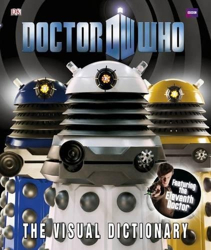
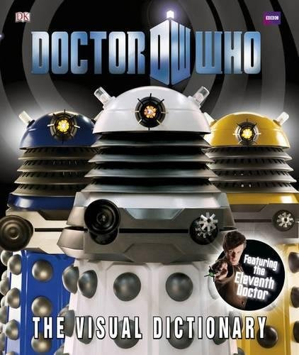

Arquivos para imprimir
Eu sei, você veio aqui para pegar alguns arquivos. Só que antes de sair imprimindo tudo, olhe pela sua casa, nas suas próprias estantes, armários ou pilhas pelos cantos da casa (todo mundo tem alguma, não tem? Eu definitivamente tenho). Se você vir alguma dessas capas pode economizar a tinta da sua impressora, ela vai funcionar perfeitamente. Caso não tenha nenhuma, não se preocupe, essa página existe para isso! Clique na imagem que você quiser para fazer download individual dela, ou no botão mágico para eu mandar imprimir todas elas pra você sem te dar trabalho. Mas você precisa separar elas depois, ok? Se mostrar tudo junto não funciona!
Você pode imprimir as imagens do tamanho que quiser desde que elas continuem visíveis, mas a impressão precisa estar sem falhas para a realidade aumentada funcionar direito, ok? Nada de qualidade rascunho, tô de olho em você! E claro, num último caso se você não tiver como imprimir você pode tentar mostrar a imagem em outra tela (como celular ou tablet), mas não é o ideal, ok? O brilho da tela atrapalha.
Botão mágico pra imprimir TUDO
Para a "Estante das Memórias": Arquivos finais


 



Para o "Museu da ficção"


Para a "Estante das Memórias": Arquivos de teste
Você quer me ouvir tagarelando pela madrugada e lendo o primeiro paragrafo de alguns livros? Ou talvez ouvir uma abertura de Doctor Who? Esses arquivos aqui foram criados enquanto eu aprendia a fazer a experiência e eu decidi deixa-los imortalizados aqui mesmo que esse desenvolvimento já tenha passado. É uma lembrança e homenagem de certa forma à jornada que foi chegar até aqui. Ouça por sua conta e risco.